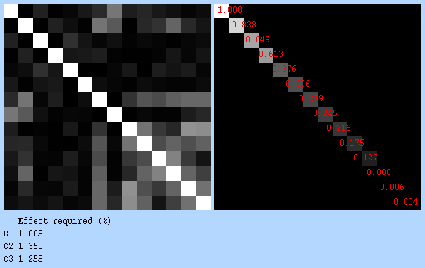
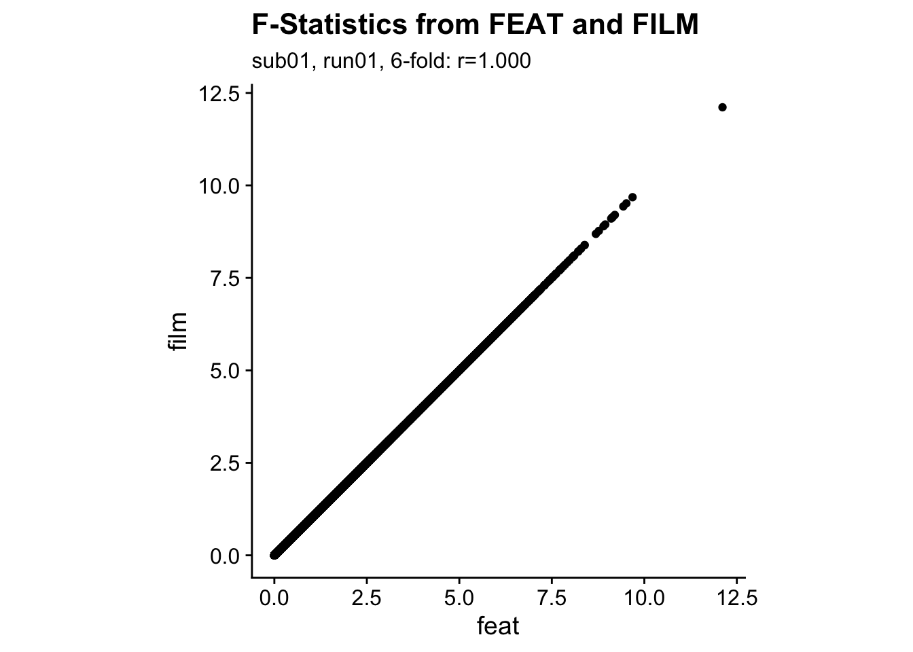
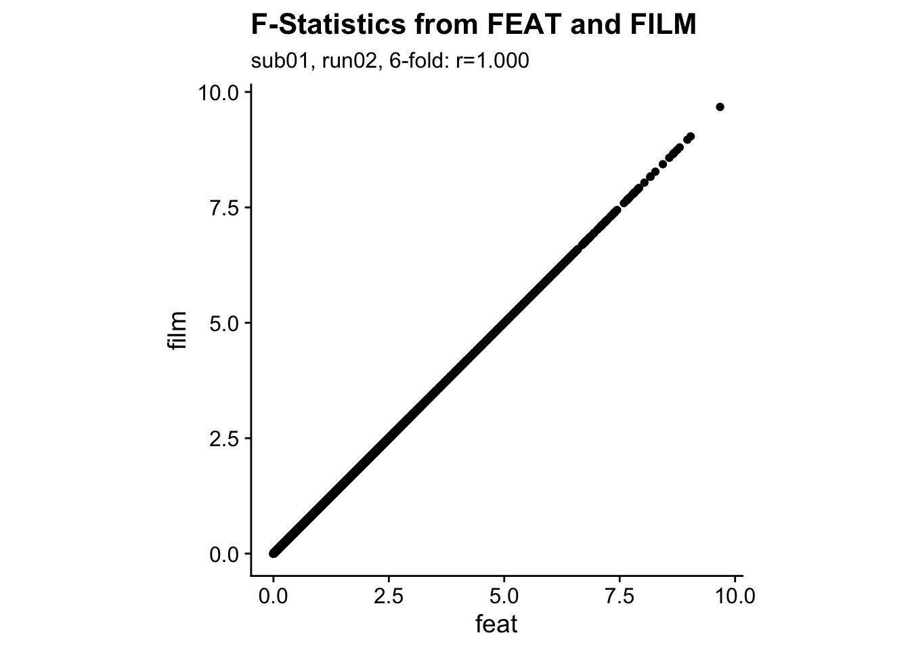
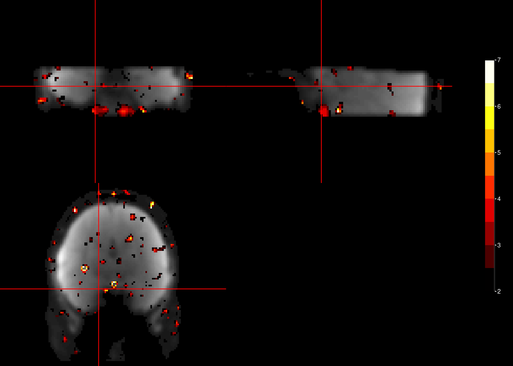
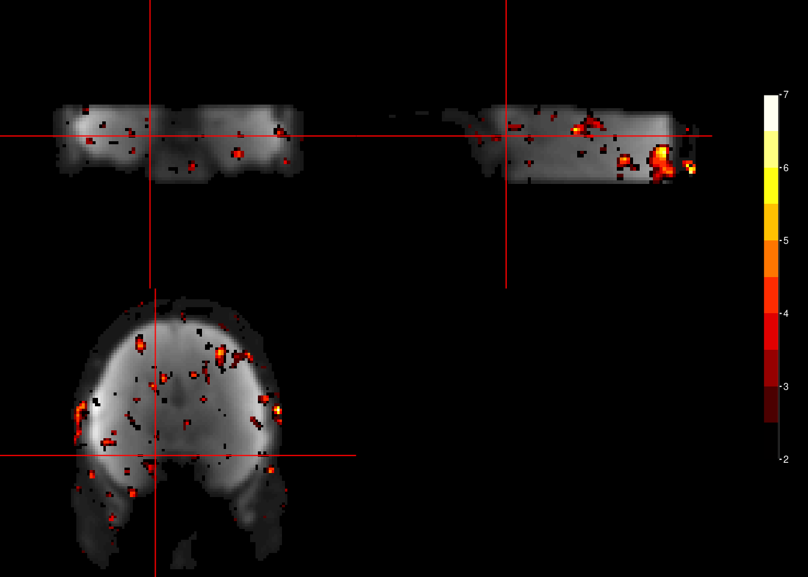

3 GLM 1
For the estimation set, a GLM (let’s call it GLM1) is implemented that includes two parametric modulators (see figure below): the sine and the cosine of the movement direction through space (\(sin(6\theta(t)\) and \(cos(6\theta(t)\), where \(\theta(t)\) is the direction of trajectory t), e.g. the virtual environment. The angles are multiplied by six because we are interested in six-fold symmetric signals. This value needs to be varied for control symmetries.
From Kunz et al. (Science, 2015):
“Multiplying by six transforms the movement directions into 60° space to account for the six-fold rotational symmetry of potential grid-cell-like representations. In other words, the factor 6 means that these regressors are sensitive to activation showing a six-fold rotational symmetry in running direction (i.e., activation with six evenly spaced peaks as a function of running direction will produce parameter estimates \(\beta1\) and \(\beta2\) for the two regressors with large amplitude \(\sqrt{\beta1² + \beta2²)}\).”
Note that \(\beta1\) and \(\beta2\) correspond to the parameter estimates for the cosine and sine regressor, respectively.
Illustration of parametric modulators included in GLM1
In keeping with the GridCAT manual, let’s split each run in a first and a second half based on the number of navigation periods.
3.1 EV files for FEAT
For each regressor, FSL FEAT expects an EV (EV = explanatory variable, i.e. regressor) file with 3-column format for each regressor. Let’s load the modified event file and write out the regressors we will want to use. These are:
- navigation EV for all timepoints of translational movement in the entire run
- sine for movement direction for navigation EV to be used as parametric modulator for first half of onsets of navigation EV
- cosine for movement direction for navigation EV to be used as parametric modulator for first half of onsets of navigation EV
- feedback EV modeling time points when participants received feedback (entire run)
To look at an n-fold periodic signal, the trajectory angle is multiplied by the desired periodicity (e.g. 6 for hexadirectional analysis) before calculating the (co)sine. Thus, there is a pair of parametric modulators for each periodicity you want to check.
# we want to look for six-fold signals, other periodicities are controls
periodicities <- c(6)
for (i_sub in subjects){
for (i_run in runs){
# create directory for EV files
ev_dir <- here("data", "glm1", "glm1_firsthalf", "feat_ev", i_sub, i_run)
if(!dir.exists(ev_dir)){dir.create(ev_dir, recursive = TRUE)}
# read the event table file
fn <- here("data", "EventTables", i_sub, paste0("eventTable_", i_run, "_jb.txt"))
event_table <- read_delim(fn, delim = "\t", col_names = TRUE, col_types = c("fddd"))
# write the navigation (translation) regressor to file in 3-column format for FSL
fn <- file.path(ev_dir, "translation.txt")
event_table %>% filter(name=="translation") %>%
select(c(onset, duration)) %>%
mutate(weight=1) %>%
write_delim(file = fn, delim = "\t", col_names = FALSE)
# write the feedback regressor to file in 3-column format for FSL
fn <- file.path(ev_dir, "feedback.txt")
event_table %>% filter(name=="feedback") %>%
select(c(onset, duration)) %>%
mutate(weight=1) %>%
write_delim(file = fn, delim = "\t", col_names = FALSE)
for (i_period in periodicities){
# add sine and cosine of running angle
event_table <- event_table %>%
# CAVE: transform angles to radians before calculating (co)sine!
mutate(sine = sin((i_period * angle)*pi/180),
cosine = cos((i_period * angle)*pi/180))
head(event_table, n=10)
# write the sine of translation angle regressor to file in 3-column format for FSL for first half of trials
fn <- file.path(ev_dir, paste0("translation_sine_", i_period, "fold_half1.txt"))
event_table %>% filter(name=="translation") %>%
slice_head(n=nrow(.)/2) %>% # first half
select(c(onset, duration, sine)) %>%
write_delim(file = fn, delim = "\t", col_names = FALSE)
# write the cosine of translation angle regressor to file in 3-column format for FSL for first half of trials
fn <- file.path(ev_dir, paste0("translation_cosine_", i_period, "fold_half1.txt"))
event_table %>% filter(name=="translation") %>%
slice_head(n=nrow(.)/2) %>% # first half
select(c(onset, duration, cosine)) %>%
write_delim(file = fn, delim = "\t", col_names = FALSE)
}
}
}3.2 Set up the GLM using FSL FEAT
The text below is based on clicking through the FEAT GUI for one run and copying the content of the resulting fsf-file to the chunk below. In this text, we replace lines/variables that need to be altered for each subject with a placeholder. These can then easily be filled in for each run of each subject. The chunk below could be shortened by removing the lines that are irrelevant for GLM 1, e.g. preprocessing, which is not carried out here.
dsgn <- '
# FEAT version number
set fmri(version) 6.00
# Are we in MELODIC?
set fmri(inmelodic) 0
# Analysis level
# 1 : First-level analysis
# 2 : Higher-level analysis
set fmri(level) 1
# Which stages to run
# 0 : No first-level analysis (registration and/or group stats only)
# 7 : Full first-level analysis
# 1 : Pre-processing
# 2 : Statistics
set fmri(analysis) 2
# Use relative filenames
set fmri(relative_yn) 0
# Balloon help
set fmri(help_yn) 1
# Run Featwatcher
set fmri(featwatcher_yn) 1
# Cleanup first-level standard-space images
set fmri(sscleanup_yn) 0
# Output directory
set fmri(outputdir) "@out_dir@"
# TR(s)
set fmri(tr) @tr@
# Total volumes
set fmri(npts) @n_vols@
# Delete volumes
set fmri(ndelete) 0
# Perfusion tag/control order
set fmri(tagfirst) 1
# Number of first-level analyses
set fmri(multiple) 1
# Higher-level input type
# 1 : Inputs are lower-level FEAT directories
# 2 : Inputs are cope images from FEAT directories
set fmri(inputtype) 2
# Carry out pre-stats processing?
set fmri(filtering_yn) 0
# Brain/background threshold, %
set fmri(brain_thresh) 10
# Critical z for design efficiency calculation
set fmri(critical_z) 5.3
# Noise level
set fmri(noise) 0.66
# Noise AR(1)
set fmri(noisear) 0.34
# Motion correction
# 0 : None
# 1 : MCFLIRT
set fmri(mc) 1
# Spin-history (currently obsolete)
set fmri(sh_yn) 0
# B0 fieldmap unwarping?
set fmri(regunwarp_yn) 0
# GDC Test
set fmri(gdc) ""
# EPI dwell time (ms)
set fmri(dwell) 0.7
# EPI TE (ms)
set fmri(te) 35
# % Signal loss threshold
set fmri(signallossthresh) 10
# Unwarp direction
set fmri(unwarp_dir) y-
# Slice timing correction
# 0 : None
# 1 : Regular up (0, 1, 2, 3, ...)
# 2 : Regular down
# 3 : Use slice order file
# 4 : Use slice timings file
# 5 : Interleaved (0, 2, 4 ... 1, 3, 5 ... )
set fmri(st) 0
# Slice timings file
set fmri(st_file) ""
# BET brain extraction
set fmri(bet_yn) 1
# Spatial smoothing FWHM (mm)
set fmri(smooth) 5
# Intensity normalization
set fmri(norm_yn) 0
# Perfusion subtraction
set fmri(perfsub_yn) 0
# Highpass temporal filtering
set fmri(temphp_yn) 1
# Lowpass temporal filtering
set fmri(templp_yn) 0
# MELODIC ICA data exploration
set fmri(melodic_yn) 0
# Carry out main stats?
set fmri(stats_yn) 1
# Carry out prewhitening?
set fmri(prewhiten_yn) 1
# Add motion parameters to model
# 0 : No
# 1 : Yes
set fmri(motionevs) 0
set fmri(motionevsbeta) ""
set fmri(scriptevsbeta) ""
# Robust outlier detection in FLAME?
set fmri(robust_yn) 0
# Higher-level modelling
# 3 : Fixed effects
# 0 : Mixed Effects: Simple OLS
# 2 : Mixed Effects: FLAME 1
# 1 : Mixed Effects: FLAME 1+2
set fmri(mixed_yn) 2
# Higher-level permutations
set fmri(randomisePermutations) 5000
# Number of EVs
set fmri(evs_orig) 4
set fmri(evs_real) 8
set fmri(evs_vox) 0
# Number of contrasts
set fmri(ncon_orig) 3
set fmri(ncon_real) 3
# Number of F-tests
set fmri(nftests_orig) 1
set fmri(nftests_real) 1
# Add constant column to design matrix? (obsolete)
set fmri(constcol) 0
# Carry out post-stats steps?
set fmri(poststats_yn) 0
# Pre-threshold masking?
set fmri(threshmask) ""
# Thresholding
# 0 : None
# 1 : Uncorrected
# 2 : Voxel
# 3 : Cluster
set fmri(thresh) 3
# P threshold
set fmri(prob_thresh) 0.05
# Z threshold
set fmri(z_thresh) 3.1
# Z min/max for colour rendering
# 0 : Use actual Z min/max
# 1 : Use preset Z min/max
set fmri(zdisplay) 0
# Z min in colour rendering
set fmri(zmin) 2
# Z max in colour rendering
set fmri(zmax) 8
# Colour rendering type
# 0 : Solid blobs
# 1 : Transparent blobs
set fmri(rendertype) 1
# Background image for higher-level stats overlays
# 1 : Mean highres
# 2 : First highres
# 3 : Mean functional
# 4 : First functional
# 5 : Standard space template
set fmri(bgimage) 1
# Create time series plots
set fmri(tsplot_yn) 1
# Registration to initial structural
set fmri(reginitial_highres_yn) 0
# Search space for registration to initial structural
# 0 : No search
# 90 : Normal search
# 180 : Full search
set fmri(reginitial_highres_search) 90
# Degrees of Freedom for registration to initial structural
set fmri(reginitial_highres_dof) 3
# Registration to main structural
set fmri(reghighres_yn) 0
# Search space for registration to main structural
# 0 : No search
# 90 : Normal search
# 180 : Full search
set fmri(reghighres_search) 90
# Degrees of Freedom for registration to main structural
set fmri(reghighres_dof) BBR
# Registration to standard image?
set fmri(regstandard_yn) 1
# Use alternate reference images?
set fmri(alternateReference_yn) 0
# Standard image
set fmri(regstandard) "/usr/local/fsl/data/standard/MNI152_T1_2mm_brain"
# Search space for registration to standard space
# 0 : No search
# 90 : Normal search
# 180 : Full search
set fmri(regstandard_search) 90
# Degrees of Freedom for registration to standard space
set fmri(regstandard_dof) 3
# Do nonlinear registration from structural to standard space?
set fmri(regstandard_nonlinear_yn) 0
# Control nonlinear warp field resolution
set fmri(regstandard_nonlinear_warpres) 10
# High pass filter cutoff
set fmri(paradigm_hp) 100
# Total voxels
set fmri(totalVoxels) 179159040
# Number of lower-level copes feeding into higher-level analysis
set fmri(ncopeinputs) 0
# 4D AVW data or FEAT directory (1)
set feat_files(1) "@func_fn@"
# Add confound EVs text file
set fmri(confoundevs) 1
# Confound EVs text file for analysis 1
set confoundev_files(1) "@conf_ev_fn@"
# EV 1 title
set fmri(evtitle1) "navigation"
# Basic waveform shape (EV 1)
# 0 : Square
# 1 : Sinusoid
# 2 : Custom (1 entry per volume)
# 3 : Custom (3 column format)
# 4 : Interaction
# 10 : Empty (all zeros)
set fmri(shape1) 3
# Convolution (EV 1)
# 0 : None
# 1 : Gaussian
# 2 : Gamma
# 3 : Double-Gamma HRF
# 4 : Gamma basis functions
# 5 : Sine basis functions
# 6 : FIR basis functions
# 8 : Alternate Double-Gamma
set fmri(convolve1) 2
# Convolve phase (EV 1)
set fmri(convolve_phase1) 0
# Apply temporal filtering (EV 1)
set fmri(tempfilt_yn1) 1
# Add temporal derivative (EV 1)
set fmri(deriv_yn1) 1
# Custom EV file (EV 1)
set fmri(custom1) "@navi_ev_fn@"
# Gamma sigma (EV 1)
set fmri(gammasigma1) 3
# Gamma delay (EV 1)
set fmri(gammadelay1) 6
# Orthogonalise EV 1 wrt EV 0
set fmri(ortho1.0) 0
# Orthogonalise EV 1 wrt EV 1
set fmri(ortho1.1) 0
# Orthogonalise EV 1 wrt EV 2
set fmri(ortho1.2) 0
# Orthogonalise EV 1 wrt EV 3
set fmri(ortho1.3) 0
# Orthogonalise EV 1 wrt EV 4
set fmri(ortho1.4) 0
# EV 2 title
set fmri(evtitle2) "sine"
# Basic waveform shape (EV 2)
# 0 : Square
# 1 : Sinusoid
# 2 : Custom (1 entry per volume)
# 3 : Custom (3 column format)
# 4 : Interaction
# 10 : Empty (all zeros)
set fmri(shape2) 3
# Convolution (EV 2)
# 0 : None
# 1 : Gaussian
# 2 : Gamma
# 3 : Double-Gamma HRF
# 4 : Gamma basis functions
# 5 : Sine basis functions
# 6 : FIR basis functions
# 8 : Alternate Double-Gamma
set fmri(convolve2) 2
# Convolve phase (EV 2)
set fmri(convolve_phase2) 0
# Apply temporal filtering (EV 2)
set fmri(tempfilt_yn2) 1
# Add temporal derivative (EV 2)
set fmri(deriv_yn2) 1
# Custom EV file (EV 2)
set fmri(custom2) "@sine_ev_fn@"
# Gamma sigma (EV 2)
set fmri(gammasigma2) 3
# Gamma delay (EV 2)
set fmri(gammadelay2) 6
# Orthogonalise EV 2 wrt EV 0
set fmri(ortho2.0) 0
# Orthogonalise EV 2 wrt EV 1
set fmri(ortho2.1) 0
# Orthogonalise EV 2 wrt EV 2
set fmri(ortho2.2) 0
# Orthogonalise EV 2 wrt EV 3
set fmri(ortho2.3) 0
# Orthogonalise EV 2 wrt EV 4
set fmri(ortho2.4) 0
# EV 3 title
set fmri(evtitle3) "cosine"
# Basic waveform shape (EV 3)
# 0 : Square
# 1 : Sinusoid
# 2 : Custom (1 entry per volume)
# 3 : Custom (3 column format)
# 4 : Interaction
# 10 : Empty (all zeros)
set fmri(shape3) 3
# Convolution (EV 3)
# 0 : None
# 1 : Gaussian
# 2 : Gamma
# 3 : Double-Gamma HRF
# 4 : Gamma basis functions
# 5 : Sine basis functions
# 6 : FIR basis functions
# 8 : Alternate Double-Gamma
set fmri(convolve3) 2
# Convolve phase (EV 3)
set fmri(convolve_phase3) 0
# Apply temporal filtering (EV 3)
set fmri(tempfilt_yn3) 1
# Add temporal derivative (EV 3)
set fmri(deriv_yn3) 1
# Custom EV file (EV 3)
set fmri(custom3) "@cosine_ev_fn@"
# Gamma sigma (EV 3)
set fmri(gammasigma3) 3
# Gamma delay (EV 3)
set fmri(gammadelay3) 6
# Orthogonalise EV 3 wrt EV 0
set fmri(ortho3.0) 0
# Orthogonalise EV 3 wrt EV 1
set fmri(ortho3.1) 0
# Orthogonalise EV 3 wrt EV 2
set fmri(ortho3.2) 0
# Orthogonalise EV 3 wrt EV 3
set fmri(ortho3.3) 0
# Orthogonalise EV 3 wrt EV 4
set fmri(ortho3.4) 0
# EV 4 title
set fmri(evtitle4) "feedback"
# Basic waveform shape (EV 4)
# 0 : Square
# 1 : Sinusoid
# 2 : Custom (1 entry per volume)
# 3 : Custom (3 column format)
# 4 : Interaction
# 10 : Empty (all zeros)
set fmri(shape4) 3
# Convolution (EV 4)
# 0 : None
# 1 : Gaussian
# 2 : Gamma
# 3 : Double-Gamma HRF
# 4 : Gamma basis functions
# 5 : Sine basis functions
# 6 : FIR basis functions
# 8 : Alternate Double-Gamma
set fmri(convolve4) 2
# Convolve phase (EV 4)
set fmri(convolve_phase4) 0
# Apply temporal filtering (EV 4)
set fmri(tempfilt_yn4) 1
# Add temporal derivative (EV 4)
set fmri(deriv_yn4) 1
# Custom EV file (EV 4)
set fmri(custom4) "@feedback_ev_fn@"
# Gamma sigma (EV 4)
set fmri(gammasigma4) 3
# Gamma delay (EV 4)
set fmri(gammadelay4) 6
# Orthogonalise EV 4 wrt EV 0
set fmri(ortho4.0) 0
# Orthogonalise EV 4 wrt EV 1
set fmri(ortho4.1) 0
# Orthogonalise EV 4 wrt EV 2
set fmri(ortho4.2) 0
# Orthogonalise EV 4 wrt EV 3
set fmri(ortho4.3) 0
# Orthogonalise EV 4 wrt EV 4
set fmri(ortho4.4) 0
# Contrast & F-tests mode
# real : control real EVs
# orig : control original EVs
set fmri(con_mode_old) orig
set fmri(con_mode) orig
# Display images for contrast_real 1
set fmri(conpic_real.1) 1
# Title for contrast_real 1
set fmri(conname_real.1) "navigation vs. baseline"
# Real contrast_real vector 1 element 1
set fmri(con_real1.1) 1
# Real contrast_real vector 1 element 2
set fmri(con_real1.2) 0
# Real contrast_real vector 1 element 3
set fmri(con_real1.3) 0
# Real contrast_real vector 1 element 4
set fmri(con_real1.4) 0
# Real contrast_real vector 1 element 5
set fmri(con_real1.5) 0
# Real contrast_real vector 1 element 6
set fmri(con_real1.6) 0
# Real contrast_real vector 1 element 7
set fmri(con_real1.7) 0
# Real contrast_real vector 1 element 8
set fmri(con_real1.8) 0
# F-test 1 element 1
set fmri(ftest_real1.1) 0
# Display images for contrast_real 2
set fmri(conpic_real.2) 1
# Title for contrast_real 2
set fmri(conname_real.2) "sine vs. 0"
# Real contrast_real vector 2 element 1
set fmri(con_real2.1) 0
# Real contrast_real vector 2 element 2
set fmri(con_real2.2) 0
# Real contrast_real vector 2 element 3
set fmri(con_real2.3) 1.0
# Real contrast_real vector 2 element 4
set fmri(con_real2.4) 0
# Real contrast_real vector 2 element 5
set fmri(con_real2.5) 0
# Real contrast_real vector 2 element 6
set fmri(con_real2.6) 0
# Real contrast_real vector 2 element 7
set fmri(con_real2.7) 0
# Real contrast_real vector 2 element 8
set fmri(con_real2.8) 0
# F-test 1 element 2
set fmri(ftest_real1.2) 1
# Display images for contrast_real 3
set fmri(conpic_real.3) 1
# Title for contrast_real 3
set fmri(conname_real.3) "cosine vs. 0"
# Real contrast_real vector 3 element 1
set fmri(con_real3.1) 0
# Real contrast_real vector 3 element 2
set fmri(con_real3.2) 0
# Real contrast_real vector 3 element 3
set fmri(con_real3.3) 0
# Real contrast_real vector 3 element 4
set fmri(con_real3.4) 0
# Real contrast_real vector 3 element 5
set fmri(con_real3.5) 1.0
# Real contrast_real vector 3 element 6
set fmri(con_real3.6) 0
# Real contrast_real vector 3 element 7
set fmri(con_real3.7) 0
# Real contrast_real vector 3 element 8
set fmri(con_real3.8) 0
# F-test 1 element 3
set fmri(ftest_real1.3) 1
# Display images for contrast_orig 1
set fmri(conpic_orig.1) 1
# Title for contrast_orig 1
set fmri(conname_orig.1) "navigation vs. baseline"
# Real contrast_orig vector 1 element 1
set fmri(con_orig1.1) 1
# Real contrast_orig vector 1 element 2
set fmri(con_orig1.2) 0
# Real contrast_orig vector 1 element 3
set fmri(con_orig1.3) 0
# Real contrast_orig vector 1 element 4
set fmri(con_orig1.4) 0
# F-test 1 element 1
set fmri(ftest_orig1.1) 0
# Display images for contrast_orig 2
set fmri(conpic_orig.2) 1
# Title for contrast_orig 2
set fmri(conname_orig.2) "sine vs. 0"
# Real contrast_orig vector 2 element 1
set fmri(con_orig2.1) 0
# Real contrast_orig vector 2 element 2
set fmri(con_orig2.2) 1.0
# Real contrast_orig vector 2 element 3
set fmri(con_orig2.3) 0
# Real contrast_orig vector 2 element 4
set fmri(con_orig2.4) 0
# F-test 1 element 2
set fmri(ftest_orig1.2) 1
# Display images for contrast_orig 3
set fmri(conpic_orig.3) 1
# Title for contrast_orig 3
set fmri(conname_orig.3) "cosine vs. 0"
# Real contrast_orig vector 3 element 1
set fmri(con_orig3.1) 0
# Real contrast_orig vector 3 element 2
set fmri(con_orig3.2) 0
# Real contrast_orig vector 3 element 3
set fmri(con_orig3.3) 1.0
# Real contrast_orig vector 3 element 4
set fmri(con_orig3.4) 0
# F-test 1 element 3
set fmri(ftest_orig1.3) 1
# Contrast masking - use >0 instead of thresholding?
set fmri(conmask_zerothresh_yn) 0
# Mask real contrast/F-test 1 with real contrast/F-test 2?
set fmri(conmask1_2) 0
# Mask real contrast/F-test 1 with real contrast/F-test 3?
set fmri(conmask1_3) 0
# Mask real contrast/F-test 1 with real contrast/F-test 4?
set fmri(conmask1_4) 0
# Mask real contrast/F-test 2 with real contrast/F-test 1?
set fmri(conmask2_1) 0
# Mask real contrast/F-test 2 with real contrast/F-test 3?
set fmri(conmask2_3) 0
# Mask real contrast/F-test 2 with real contrast/F-test 4?
set fmri(conmask2_4) 0
# Mask real contrast/F-test 3 with real contrast/F-test 1?
set fmri(conmask3_1) 0
# Mask real contrast/F-test 3 with real contrast/F-test 2?
set fmri(conmask3_2) 0
# Mask real contrast/F-test 3 with real contrast/F-test 4?
set fmri(conmask3_4) 0
# Mask real contrast/F-test 4 with real contrast/F-test 1?
set fmri(conmask4_1) 0
# Mask real contrast/F-test 4 with real contrast/F-test 2?
set fmri(conmask4_2) 0
# Mask real contrast/F-test 4 with real contrast/F-test 3?
set fmri(conmask4_3) 0
# Do contrast masking at all?
set fmri(conmask1_1) 0
##########################################################
# Now options that do not appear in the GUI
# Alternative (to BETting) mask image
set fmri(alternative_mask) ""
# Initial structural space registration initialisation transform
set fmri(init_initial_highres) ""
# Structural space registration initialisation transform
set fmri(init_highres) ""
# Standard space registration initialisation transform
set fmri(init_standard) ""
# For full FEAT analysis: overwrite existing .feat output dir?
set fmri(overwrite_yn) 0
'Now, we define the function that creates the fsf-file by filling the placeholders and writing to file.
create_fsf <- function(fsf = dsgn, placeholder = c("@n_vols@"), replace_with = c("666"), out_fn = NA){
assertthat::are_equal(length(placeholder), length(replace_with))
# loop over the placeholders and fill them with info
for (i in 1:length(placeholder)){
fsf <- gsub(pattern=placeholder[i], replacement = replace_with[i], x=fsf)
}
# write fsf file
con<-file(out_fn)
writeLines(fsf, con)
close(con)
}Next, for each run and periodicity, let’s replace the placeholders with the required variables.
# these are the placeholders in the fsf
to_replace <- c("@out_dir@",
"@func_fn@",
"@tr@",
"@n_vols@",
"@navi_ev_fn@",
"@sine_ev_fn@",
"@cosine_ev_fn@",
"@feedback_ev_fn@",
"@conf_ev_fn@")
for (i_sub in subjects){
for (i_run in runs){
# current functional data and find number of volumes in case they differ
func_fn <- here("data", "FunctionalScans", "4D", i_sub, i_run, paste0(i_run, "_masked.nii.gz"))
hdr <- fslhd(func_fn, verbose =FALSE)
hdr <- hdr[grep("\\bdim4\\b", hdr)]
n_vols <- regmatches(hdr, gregexpr("[[:digit:]]+", hdr))[[1]][2]
for (i_period in periodicities){
# folder to write the fsf-files to
fsf_dir <- here("data", "glm1", "glm1_firsthalf", "feat_design",
paste0(i_period, "fold"), i_sub, i_run)
if(!dir.exists(fsf_dir)){dir.create(fsf_dir, recursive = TRUE)}
# collect the info we need
fsf_fn <- file.path(fsf_dir, sprintf("%s_%s_%dfold.fsf", i_sub, i_run, i_period))
out_dir <- here("data", "glm1", "glm1_firsthalf", paste0(i_period, "fold"), i_sub, i_run)
tr <- 1.5
navi_ev_fn <- here("data", "glm1", "glm1_firsthalf", "feat_ev", i_sub, i_run, "translation.txt")
sine_ev_fn <- here("data", "glm1", "glm1_firsthalf", "feat_ev", i_sub, i_run,
paste0("translation_sine_", i_period, "fold_half1.txt"))
cosine_ev_fn <- here("data", "glm1", "glm1_firsthalf", "feat_ev", i_sub, i_run,
paste0("translation_cosine_", i_period, "fold_half1.txt"))
feedback_ev_fn <- here("data", "glm1", "glm1_firsthalf", "feat_ev", i_sub, i_run, "feedback.txt")
conf_ev_fn <- here("data", "AdditionalRegressors", i_sub,
paste0("realignmentParameters_", i_run ,".txt"))
# collect the filler items. CAVE: Must be in same order as to_replace
fillers <- c(out_dir,
func_fn,
tr,
n_vols,
navi_ev_fn,
sine_ev_fn,
cosine_ev_fn,
feedback_ev_fn,
conf_ev_fn)
# create the fsf file
create_fsf(fsf = dsgn, placeholder = to_replace, replace_with = fillers, out_fn = fsf_fn)
# create GLM design files to use with film_gls
system(sprintf("%s/bin/feat_model %s %s",
fsldir(), tools::file_path_sans_ext(fsf_fn), conf_ev_fn))
}
}
}3.3 Run GLM1
We are ready to run GLM1. We can do so using FEAT or the bare film_gls command.
NB: For this to work, make sure FSL is correctly configured. On MacOS that might mean starting RStudio from the terminal (open -na Rstudio).
3.3.1 FEAT
We start by running GLM1 using FEAT.
for (i_sub in subjects){
for (i_run in runs){
for (i_period in periodicities){
# check if the zstat of the F-contrast exists, this should be one of the last files written
fn <- here("data", "glm1", "glm1_firsthalf", paste0(i_period, "fold"),
i_sub, paste0(i_run, ".feat"), "stats", "zfstat1.nii.gz")
if (!file.exists(fn)){
# build the command and run
fsf_fn <- here("data", "glm1", "glm1_firsthalf", "feat_design",
paste0(i_period, "fold"), i_sub, i_run,
sprintf("%s_%s_%dfold.fsf", i_sub, i_run, i_period))
cmd <- sprintf("%s/bin/feat %s", fsldir(), fsf_fn)
system(cmd, intern = TRUE)
# remove the residuals file to clear some space
system(sprintf("rm %s",
here("data", "glm1", "glm1_firsthalf", paste0(i_period, "fold"),
i_sub, paste0(i_run, ".feat"), "stats", "res4d.nii.gz")))
}
}
}
}Here is the design matrix as visualized by FEAT:
GLM1 design matrix
Covariance matrix & design efficiency: 
3.3.2 FILM_GLS
The command here is based on the command used by FEAT. The results should thus be identical.
for (i_sub in subjects){
for (i_run in runs){
for (i_period in periodicities){
# files and folders to be used as input for film_gls
func_fn <- here("data", "FunctionalScans", "4D", i_sub, i_run, paste0(i_run, "_masked.nii.gz"))
out_dir <- here("data", "glm1", "glm1_firsthalf", paste0(i_period, "fold"), i_sub, i_run)
pd_fn <- here("data", "glm1", "glm1_firsthalf", "feat_design",
paste0(i_period, "fold"), i_sub, i_run,
sprintf("%s_%s_%dfold.mat", i_sub, i_run, i_period))
con_fn <- here("data", "glm1", "glm1_firsthalf", "feat_design",
paste0(i_period, "fold"), i_sub, i_run,
sprintf("%s_%s_%dfold.con", i_sub, i_run, i_period))
fcon_fn <- here("data", "glm1", "glm1_firsthalf", "feat_design",
paste0(i_period, "fold"), i_sub, i_run,
sprintf("%s_%s_%dfold.fts", i_sub, i_run, i_period))
# check if the zstat of the F-contrast exists, this should be one of the last files written
fn <- file.path(out_dir, "zfstat1.nii.gz")
if (!file.exists(fn)){
# build the command and run
cmd <- sprintf("%s/bin/film_gls --in=%s --rn=%s --pd=%s --thr=61 --sa --ms=5 --con=%s --fcon=%s", # note that you may want to change these options!
fsldir(), func_fn, out_dir, pd_fn, con_fn, fcon_fn)
system(cmd)
# remove the residuals file to clear some space
system(sprintf("rm %s", file.path(out_dir, "res4d.nii.gz")))
}
}
}
}3.4 Results GLM 1
3.4.1 Compare results from FEAT and FILM
After running the analysis using FEAT and via film_gls directly, let’s check if the results are comparable. We simply load the images with the results of the F-Test of the periodic sine and cosine regressors and correlate the F-values across voxels.
for (i_sub in subjects){
for (i_run in runs){
for (i_period in periodicities){
# load the F-Stat images
fn1 <- here("data", "glm1", "glm1_firsthalf", paste0(i_period, "fold"),
i_sub, paste0(i_run, ".feat"), "stats", "fstat1.nii.gz")
fn2 <- here("data", "glm1", "glm1_firsthalf", paste0(i_period, "fold"),
i_sub, i_run, "fstat1.nii.gz")
feat_nii <- readNIfTI2(fn1)
film_nii <- readNIfTI2(fn2)
# store in data frame
stat_df <- tibble(feat = c(feat_nii), film = c(film_nii))
# diagnostic plot
p1 <- ggplot(stat_df, aes(x=feat, y=film)) +
geom_point() +
theme_cowplot() +
theme(aspect.ratio = 1) +
labs(title = "F-Statistics from FEAT and FILM",
subtitle = sprintf("%s, %s, %d-fold: r=%.3f",
i_sub, i_run, i_period, cor(stat_df$feat, stat_df$film)))
print(p1)
}
}
}
3.4.2 F-Test results
Finally, we can plot the F-Test results onto the brain. This F-test is not unbiased, but is often used prominently in papers (c.f. Constantinescu et al., Science, 2016; Bongioanni et al., Nature, 2021). It is not the cross-validated (i.e. tested on an independent data partition), but Bongioanni et al. (Nature, 2021) developed a permutation-based test to use it for significance testing. Using the F-Test on periodic sine and cosine regressors fitted to the entire dataset might be the most powerful approach to demonstrate a hexadirectional signal.
The plots below are arbitrarily thresholded at F > 2.
for (i_sub in subjects){
for (i_run in runs){
for (i_period in periodicities){
# load the mean functional and F-Stat image
fn <- here("data", "glm1", "glm1_firsthalf", paste0(i_period, "fold"),
i_sub, paste0(i_run, ".feat"), "mean_func.nii.gz")
mean_func_nii <- readNIfTI2(fn)
fn <- here("data", "glm1", "glm1_firsthalf", paste0(i_period, "fold"),
i_sub, i_run, "fstat1.nii.gz")
f_nii <- readNIfTI2(fn)
f_nii[f_nii < 2] <- 0
# overlay F-test on mean func
ortho2(mean_func_nii, f_nii, xyz = c(46,46,15),
ycolorbar = TRUE,
col.y = oro.nifti::hotmetal(10),
ybreaks = seq(2,7,0.5))
}
}
}